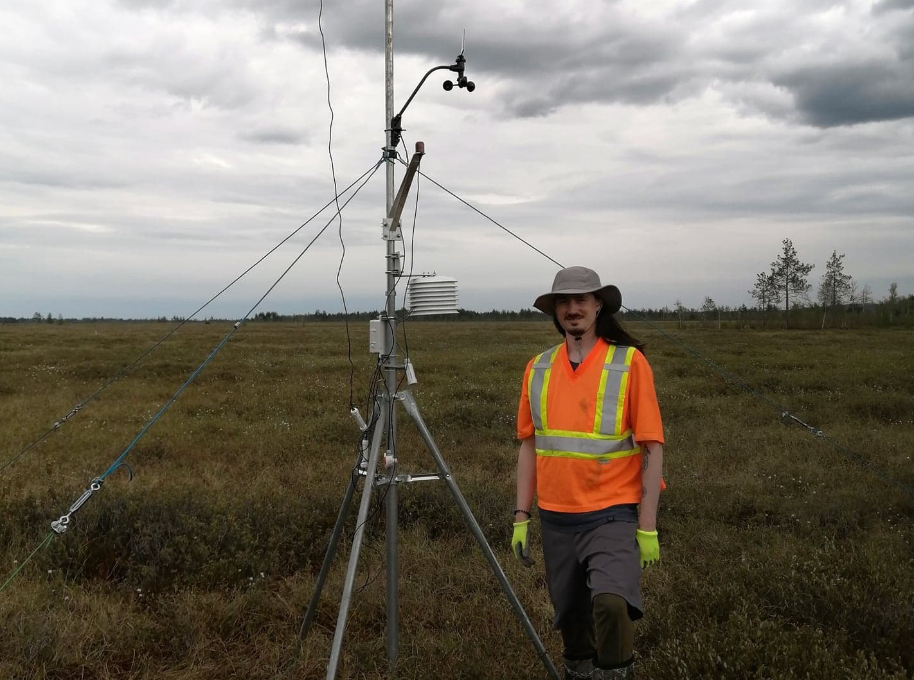
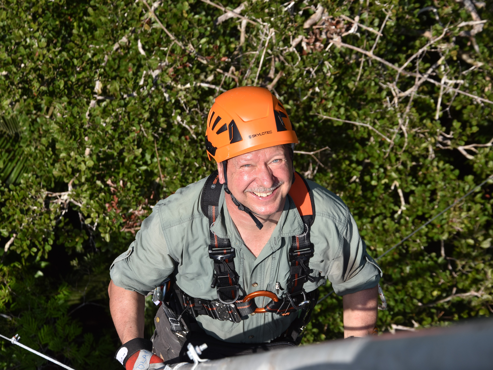

Équipe
Chercheurs

| Nom | Dr. Michelle Garneau |
| Courriel | garneau.michelle@uqam.ca |
Michelle Garneau a initié le projet et établi de solides collaborations avec le gouvernement du Québec et les deux autres partenaires au cours de la dernière année. Professeure titulaire à l’Université du Québec à Montréal (UQAM), Mme Garneau a dirigé avec succès plusieurs projets de recherche utilisant des méthodes novatrices pour documenter l’impact des variations climatiques sur la séquestration du carbone dans le temps et l’espace. Ses activités de recherche au cours des 25 dernières années ont contribué au développement de la Loi concernant la conservation des milieux humides et hydriques (LCMHH) en reconnaissant l’importance de la fonction de séquestration du carbone dans les milieux humides et leur conservation pour la lutte contre les changements climatiques. Elle a été sollicitée pour diriger le programme québécois de recherche sur les milieux humides et l’atténuation des effets du climat, qui a donné lieu au présent projet.

| Name | Dr. Scott J. Davidson |
| davidson.scott_j@uqam.ca |
Scott J. Davidson est professeur adjoint en dynamique du carbone des milieux humides à l’Université du Québec à Montréal (UQAM) et dirige le Groupe de recherche sur la résilience des milieux humides. Ses recherches portent sur la façon dont les milieux humides des régions arctiques, boréales, alpines et tempérées réagissent aux changements climatiques, à l’utilisation des terres et aux perturbations, en mettant l’accent sur le cycle du carbone et les émissions de gaz à effet de serre. Les recherches du Scott Davidson combinent les mesures sur le terrain, la télédétection et la modélisation des écosystèmes pour comprendre la résilience des milieux humides et leur rôle dans la régulation du climat. Il a contribué de manière significative à l’avancement des connaissances sur la façon dont la conservation et la restauration des milieux humides contribuent à l’atténuation du changement climatique et a participé à des efforts internationaux visant à créer des réseaux de recherche et des initiatives de science communautaire.

| Nom | Dr. Sara Helen Knox |
| Courriel | sara.knox@mcgill.ca |
Sara Knox est professeure adjointe de géographie à l’Université McGill, après avoir été titulaire d’une chaire de recherche du Canada en éco-météorologie à l’Université de la Colombie-Britannique (UBC). Ses recherches portent sur la manière dont les échanges de GES, d’eau et d’énergie entre les milieux humides et l’atmosphère réagissent aux changements climatiques et aux perturbations, ainsi que sur la manière de modifier les pratiques de gestion des milieux humides pour s’adapter au changement climatique et en atténuer les effets. Sara Knox a apporté plusieurs contributions importantes à la compréhension du rôle climatique de la conservation et de la restauration des milieux humides en Amérique du Nord, en mettant l’accent sur les tourbières restaurées, les milieux humides de la région des fondrières des Prairies au Canada et les milieux humides intertidales. Elle a également codirigé l’initiative internationale FLUXNET-CH4, une base de données mondiale de mesures de flux de CH4 (covariance des turbulences).

| Nom | Dr. Oliver Sonnentag |
| Courriel | oliver.sonnentag@umontreal.ca |
Oliver Sonnentag est professeur adjoint et titulaire de la Chaire de recherche du Canada en biogéosciences atmosphériques des hautes latitudes à l’Université de Montréal (UdeM). Ses recherches visent à comprendre les changements dans les interactions entre la surface terrestre et l’atmosphère en réponse à l’augmentation des pressions naturelles et anthropiques. Il a établi un transect de tours à covariance des turbulences le long d’un gradient climatique et de pergélisol de 2000 km dans la forêt boréale du nord-ouest du Canada. Il utilise également des techniques de télédétection et de modélisation pour étudier les changements dans la composition, la structure et la fonction des écosystèmes boréaux de l’Arctique. En outre, M. Sonnentag dirige un réseau de formation visant à renforcer les capacités locales des communautés autochtones dans les Territoires du Nord-Ouest en matière de surveillance communautaire des modifications des écosystèmes, et il est co-investigateur du programme CREATE LEAP du CRSNG, qui vise à former les futurs spécialistes du dégel du pergélisol et de la recherche nordique.

| Nom | Dr. Vincent Maire |
| Courriel | Vincent.Maire@uqtr.ca |
Vincent Maire est professeur en sciences de l’environnement à l’Université du Québec à Trois-Rivières (UQTR). Il était auparavant titulaire d’une chaire de recherche junior à l’UQTR en écologie fonctionnelle arctique, se concentrant sur les rétroactions des changements de la végétation arctique sur la dynamique du pergélisol et le fonctionnement du sol, y compris les flux de CO2 et de CH4. Ses recherches portent sur la façon dont les propriétés et les changements de la végétation et des communautés microbiennes modifient le cycle du carbone et de l’azote dans le sol dans les écosystèmes arctiques, tempérés, secs et humides. Depuis 2019, il est impliqué dans le Pôle d’Expertise du Lac Saint-Pierre, qui évalue le rôle des perturbations agricoles sur le fonctionnement du littoral du Lac Saint-Pierre. Dans ce cadre, il a déterminé comment les perturbations agricoles ont modifié la séquestration de la biomasse et du C dans les sols et les flux de CO2 et de CH4 vers l’atmosphère.

| Nom | Dr. Alexandre Roy |
| Courriel | Alexandre.Roy@uqtr.ca |
Alexandre Roy est professeur adjoint à l’Université du Québec à Trois-Rivières (UQTR) et titulaire de la chaire de recherche de l’UQTR en télédétection nordique. Il travaille depuis plus de douze ans dans le domaine de la modélisation et de la télédétection de la cryosphère. Depuis 2014, en plus d’une solide expertise dans le suivi de la neige et des cycles de gel et dégel, il a contribué à améliorer la compréhension des relations entre la cryosphère et les flux de carbone dans les environnements de haute latitude. Il travaille en étroite collaboration avec diverses agences spatiales (NASA, Agence spatiale canadienne et Agence spatiale européenne) pour améliorer la surveillance des variables clés de surface liées aux flux de carbone, telles que l’humidité du sol, la température du sol, l’état de gel/dégel de la surface et la teneur en eau de la végétation.

| Nom | Dr. Marc-André Bourgault |
| Courriel | Marc-Andre.Bourgault@ggr.ulaval.ca |
Marc-André Bourgault est professeur adjoint au département de géographie de l’Université Laval. Son domaine d’expertise est l’analyse de données et la modélisation numérique de l’hydrologie des milieux humides. Ses recherches portent sur les interactions hydrologiques et biogéochimiques dans les milieux humides ainsi que sur leur capacité à réduire les risques d’inondation et à accumuler le carbone. Il est également impliqué dans différents projets agro- et hydro-climatologiques en collaboration avec un large groupe de chercheurs dans lesquels il analyse des données de simulation climatique et développe de nouveaux indicateurs pour quantifier le risque des changements climatiques sur divers secteurs socio-économiques. Il est responsable d’un axe de recherche du Réseau inondations intersectoriel du Québec (RIISQ), collaborateur actif du centrEAU et membre chercheur de l’Institut en environnement, développement et société (Institut EDS).
| Nom | Dr. Paul A. del Giorgio |
| Courriel | del_giorgio.paul@uqam.ca |
Paul A. del Giorgio est professeur titulaire à l’Université du Québec à Montréal (UQAM). Il est écologiste aquatique et biogéochimiste. Depuis 2009, il est titulaire de la Chaire de recherche CRSNG - Hydro-Québec en biogéochimie du carbone dans les systèmes aquatiques boréaux (Chaire CarBBAS) et a dirigé l’une des plus importantes études à ce jour sur la dynamique des gaz à effet de serre et du carbone dans les rivières et les lacs du biome boréal éloigné riche en eau du Canada. Ses recherches aquatiques intégratives dans le biome boréal ont contribué à une réévaluation radicale des liens entre l’aquatique et le terrestre et du rôle des eaux intérieures, y compris les réservoirs hydroélectriques, dans le cycle global du carbone. Il a développé des partenariats fructueux avec l’industrie et d’autres parties prenantes, notamment Hydro Québec et la nation crie d’Eeyou Ischee dans la baie James.

| Nom | Dr. Evelyne Thiffault |
| Courriel | Evelyne.Thiffault@sbf.ulaval.ca |
Evelyne Thiffault est professeure agrégée en écologie et aménagement forestier au département des sciences du bois et de la forêt de l’Université Laval et membre du Centre de recherche sur les matériaux renouvelables. Ses travaux portent sur l’aménagement du territoire et la production de bois pour l’atténuation des changements climatiques. Son programme de recherche comprend des études fondamentales et appliquées des processus écologiques liés au cycle du carbone entre les écosystèmes et l’atmosphère sous l’influence du climat et de l’aménagement forestier, ainsi que des travaux sur le cycle de vie des produits du bois et leur rôle pour répondre aux besoins des sociétés en matière de matériaux et d’énergie.
Professionnels

| Name | Muhammad Umair |
| Courriel | muhammad.umair.1@umontreal.ca |
Muhammad Umair est data scientist pour le projet CARBONIQUE. Avant d’occuper ce poste, il était chercheur postdoctoral à l’Université de Montréal (UdeM, Labo Atmosbios), où ses travaux consistaient à mettre en œuvre le paramétrage de « l’optimisation stomatique basée sur l’hydraulique du xylème » dans CLASSIC (Modèle de schéma canadien de surface terrestre incluant les cycles biogéochimiques) et d’évaluer son impact sur les flux de carbone et d’eau pour des projections historiques et futures. Durant son stage postdoctoral, il a travaillé en étroite collaboration avec Oliver Sonnentag (directeur de recherche) et deux autres collaborateurs : Joe R. Melton d’Environnement et Changement climatique Canada (ECCC) et Alexander Roy de l’UQTR sur un projet financé par l’Agence spatiale canadienne (ASC). Il possède plus de cinq ans d’expérience en modélisation climatique, en télédétection et en observations de tours de flux. Il a également acquis une expérience en enseignement en travaillant comme professeur adjoint au Pakistan avant de commencer une bourse postdoctorale au Canada. De plus, il possède de l’expérience dans l’utilisation des outils IA-ML dans la modélisation climatique. Au cours de son MS-Ph.D. en Corée du Sud, il a travaillé sur le modèle terrestre communautaire (CLM, versions 4.0 et 5.0) dans le cadre de modélisation du système terrestre communautaire (CESM) et sur divers ensembles de données de télédétection (MODIS, SMAP).
| Nom | David Trejo |
| Courriel | trejo_cancino.david_ulises@uqam.ca |
En tant que professionnel de recherche à l’UQAM, David accomplit des tâches essentielles dans le cadre du projet CARBONIQUE. Il contribue à l’installation, à l’entretien et au fonctionnement d’équipements de pointe afin d’assurer la précision de la collecte des données. Son rôle consiste également à calibrer l’équipement scientifique et à participer à la maintenance de la base de données, tout cela dans le but d’améliorer notre compréhension du changement climatique.

| Nom | Laurent Lessard |
| Courriel | Laurent.Lessard2@uqtr.ca |
Laurent travaille comme professionnel de recherche à l’UQTR et s’occupe de la coordination des travaux de terrain. Au fil des années, il a acquis une grande expérience en travaux de terrain en régions éloignées dans un contexte arctique. Il s’occupe également de la maintenance de tours à flux au Nunavik et contribue à des projets de recherche au Nunavik, au Nunavut et dans l’Ouest canadien. Dans le cadre du projet CARBONIQUE, Laurent contribue à l’installation et la maintenance des tours à flux et de leurs instruments ainsi qu’aux relevés de végétation par drone.

| Nom | Jean-Benoit Leblond Chouinard |
| Courriel | jean-benoit.leblond-chouinard.1@ulaval.ca |
Jean-Benoit travaille comme professionnel de recherche à l’Université Laval. Dans le cadre du projet CARBONIQUE, il est principalement responsable de l’installation et de la gestion des instruments hydrologiques. Il effectue également diverses tâches d’analyse de données et de terrain liées à l’hydrologie des tourbières.
| Nom | Martina Schlaipfer |
| Courriel | schlaipfer.martina@uqam.ca |
Martina Schlaipfer est la coordinatrice scientifique du projet CARBONIQUE. Avant de s’installer au Canada, elle a travaillé pendant une dizaine d’années sur des projets liés à l’échange des gaz à effet de serre dans des tourbières agricoles perturbées et remouillées en Allemagne. Elle a de l’expérience avec les mesures de flux par covariance des turbulences et de chambres, ainsi que dans la gestion de projets. Plus récemment, elle a également été impliquée dans la communication scientifique pour le Centre scientifique des tourbières de l’Université des sciences appliquées de Weihenstephan-Triesdorf (HSWT).

| Nom | Léonie Perrier |
| Courriel | perrier.leonie@uqam.ca |
Léonie Perrier est la coordonnatrice de la Chaire de recherche québécoise portant sur l’étude du CARbone dans les milieux humides comme solution fondée sur la nature pour lutter contre le changement CLImatiQUE (CARCLIQUE). Elle gère la logistique de terrain, les budgets, les rapports d’avancement et apporte un soutien aux étudiants pour plusieurs projets de recherche sur la cartographie des stocks de carbone, les reconstructions paléoécologiques et les bilans de carbone dans les milieux humides. Elle participe activement à la mise en place du projet de recherche CARBONIQUE.

| Nom | Michaela de Melo |
| Courriel | ladeira_de_melo.michaela@uqam.ca |
Michaela de Melo est biologiste et agente de recherche au laboratoire de biogéochimie du carbone dans les systèmes aquatiques boréaux (UQÀM, prof. Paul del Giorgio). Avant de travailler au Canada, elle a réalisé une maîtrise sur le métabolisme des grands fleuves amazoniens et un doctorat sur l’écologie microbienne et la dynamique de la matière organique dissoute dans les lacs de plaine inondable en Amazonie brésilienne. En tant que postdoctorante, elle a étudié l’hydrologie et les exports fluviaux dans l’est de la baie James en utilisant des mesures haute fréquence autonomes. Michaela collabore à plusieurs projets sur la biogéochimie des réservoirs, lacs et rivières dans divers contextes environnementaux.
| Nom | Zoran Nesic |
| Courriel | zoran.nesic@ubc.ca |
Zoran Nesic est ingénieur de recherche principal à l’Université de la Colombie-Britannique (UBC). Il est responsable de la gestion de nombreux projets de recherche et de conception d’équipements pour diverses facultés et départements de l’UBC. Il conçoit des systèmes de covariance de flux et de respiration du sol qui sont utilisés dans diverses universités nord-américaines ainsi que par d’autres instituts de recherche. Ses principaux intérêts de recherche sont (1) la conception de systèmes de mesure automatisés pour les mesures environnementales à long terme et (2) la standardisation des procédures de mesure et de traitement des données pour assurer une haute qualité et reproductibilité des résultats de recherche.

| Nom | Olaf Kolle |
| Courriel | oeekolle@outlook.de |
Olaf Kolle contribue de façon intermittente au projet CARBONIQUE en tant que scientifique invité à l’UQAM, grâce à son expertise en matière de terrain et d’instrumentation. Ses principales tâches consistent à concevoir et à mettre en œuvre l’ensemble des tours à covariance des turbulences (structure, protection contre la foudre, instrumentation, acquisition de données, accès à distance, mesures de sécurité) en collaboration avec les autres membres de l’équipe, qui apportent tous leurs compétences et leur expérience respectives. Il transmet également des connaissances à la nouvelle génération de chercheurs et au personnel technique.
Étudiants
- Joannie Beaulne (ULaval
- (Doctorat en sciences forestières)
- Joanie Boulard (UQAM)
- (Maitrise en biologie)
- Didier Philippo (UQAM)
- (Maitrise en biologie)

- Albert Chalifoux (ULaval)
- (Maitrise en sciences géographiques)